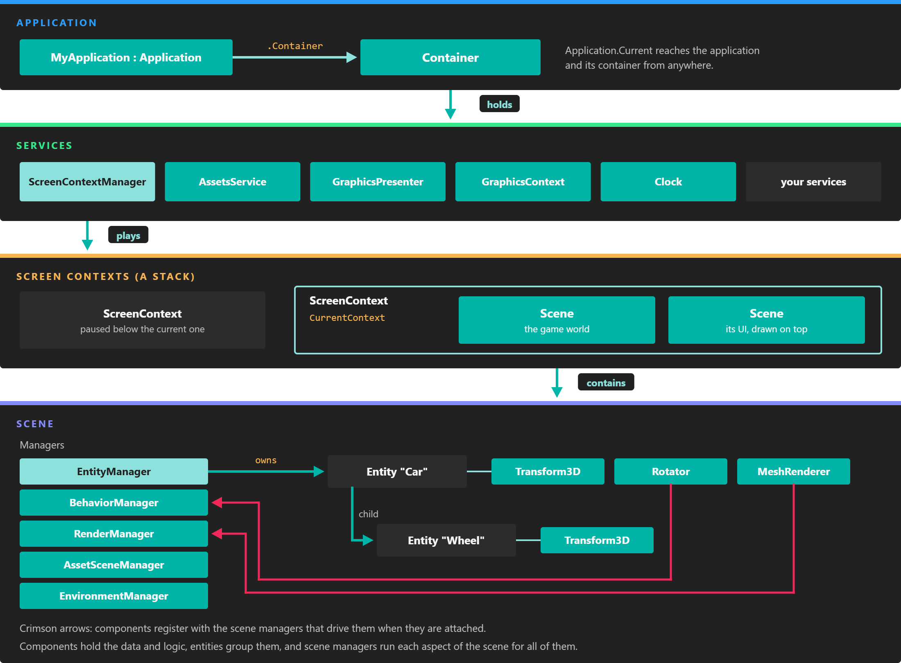

Application

Everything hangs from the application: services live in its container, and one of them, the ScreenContextManager, owns the scenes that are playing.
The Application class is the entry point of every Evergine project. It owns the Container where all services are registered, and it exposes the frame loop through UpdateFrame() and DrawFrame(), which the launcher of each profile calls once per frame. Your project contains one class that derives from it, MyApplication in the project template.
There is only one application per process. Once created, it is available everywhere through Application.Current.
Members
Properties
| Property | Default | Description |
|---|---|---|
| Current (static) | The last application created | The running application. It is the usual way to reach the container from code that is not an Evergine element. |
| Container | A new container | The Application Container with every registered service. |
| ExecutionMode | Standalone |
Where the application runs: Standalone, Editor (inside Evergine Studio) or EditorSimulation (playing inside Evergine Studio). |
| IsEditor | false |
true when ExecutionMode is Editor or EditorSimulation. |
| IsLowProfile | true on Android, iOS, Web, Arm and Arm64 |
Tells the engine to favour cheaper rendering paths. It can only be changed before Initialize() runs, or through the Application(bool isLowProfile) constructor. |
Methods
| Method | Description |
|---|---|
| Initialize() | Registers the services configured in Evergine Studio, caches the core services and starts every service already created. Override it to navigate to your first scene, and call base.Initialize() first. |
| UpdateFrame(TimeSpan gameTime) | Runs the update half of a frame: clock, updatable services and the scenes that are playing. |
| DrawFrame(TimeSpan gameTime) | Runs the draw half of a frame: renders the scenes and presents the result on every display. |
| OnActivated() | Called by the launcher when the application returns to the foreground. It resumes updates and reactivates the services. |
| OnDeactivated() | Called by the launcher when the application goes to the background. It deactivates the services and stops updates until OnActivated(). |
| Dispose() | Destroys every service, then releases the container. The launcher calls it when the main loop ends. |
The Using Application page shows how these methods fit together in a frame.